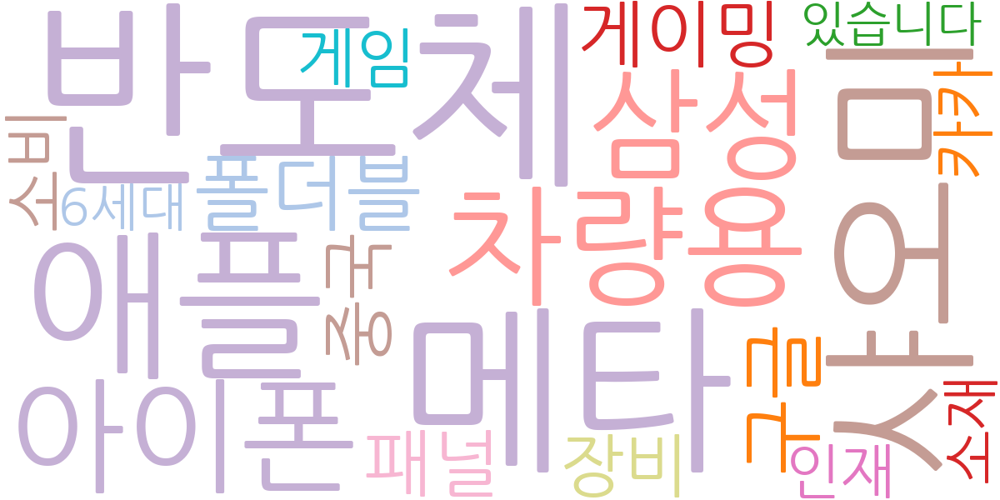
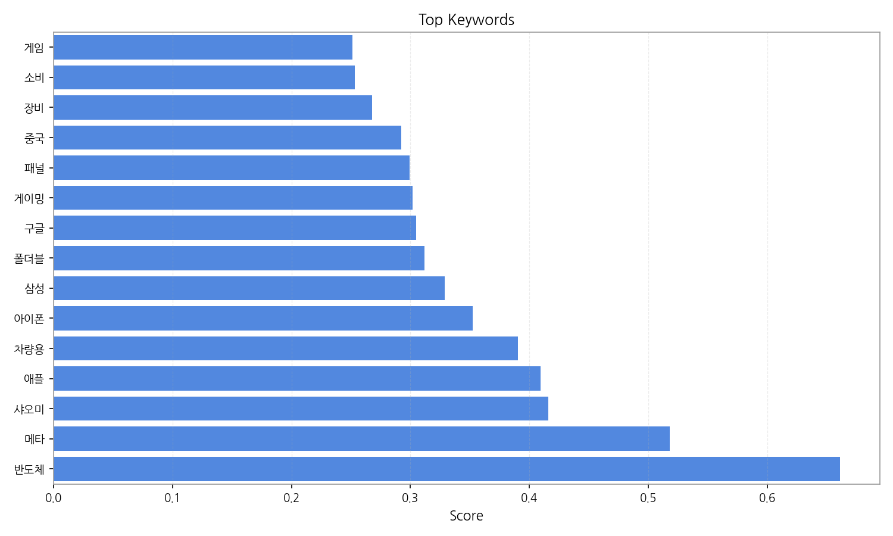
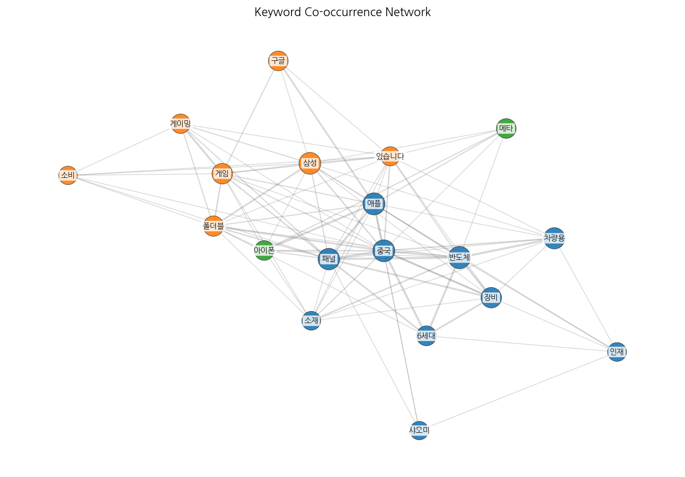
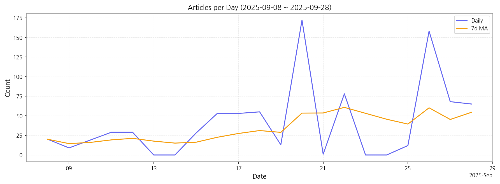

1. 핵심 맥락:
2. 최근 변화/스파이크:
3. 실무 인사이트:

| Rank | Keyword | Score |
|---|---|---|
| 1 | 반도체 | 0.661 |
| 2 | 메타 | 0.518 |
| 3 | 샤오미 | 0.416 |
| 4 | 애플 | 0.409 |
| 5 | 차량용 | 0.390 |
| 6 | 아이폰 | 0.353 |
| 7 | 삼성 | 0.329 |
| 8 | 폴더블 | 0.312 |
| 9 | 구글 | 0.305 |
| 10 | 게이밍 | 0.302 |
| 11 | 패널 | 0.299 |
| 12 | 중국 | 0.292 |
| 13 | 장비 | 0.268 |
| 14 | 소비 | 0.253 |
| 15 | 게임 | 0.251 |



1. 핵심 맥락:
2. 최근 변화/스파이크:
3. 실무 인사이트:
| Idea | Target | Value Prop | Score |
|---|---|---|---|
| 메타버스 협업용 초고해상도 MicroLED XR 글래스 | 북미 빅테크 기업 (Meta, Apple, Google) | 업계 최고 수준의 해상도 및 몰입감 제공, 장시간 사용에도 편안한 착용감, 차세대 메타버스 협업 환경 구축의 핵심 요소 | 4.50 |
| AI 기반 디스플레이 공정 자동화 및 수율 예측 솔루션 | 국내외 디스플레이 제조사 (삼성디스플레이, LG디스플레이, BOE) | 공정 자동화 및 실시간 모니터링, 수율 예측 및 불량 원인 분석, 생산 비용 절감 및 생산 효율성 극대화 | 4.30 |
| AI 기반 차량용 HUD 몰입형 증강현실 솔루션 | 글로벌 완성차 OEM (프리미엄 브랜드 중심) | AI 기반 실시간 객체 인식 및 예측을 통해 운전 안전성 극대화, 몰입형 AR 경험 제공, 차세대 자율주행 UI/UX 선점 | 4.20 |
| 폴더블 IT 기기용 UTG 기반 저전력 OLED 패널 | 글로벌 스마트폰 제조사 (Samsung, Xiaomi) | 최고 수준의 폴딩 내구성 및 저전력 소비, 얇고 가벼운 디자인 구현, 폴더블 기기의 사용성 및 휴대성 극대화 | 4.00 |
| 퀀텀닷 컬러 필터 기반 고색재현율 LCD for 차량용 디스플레이 | 글로벌 자동차 부품 제조사 (현대모비스, Bosch) | 넓은 색 영역 및 높은 명암비 제공, 극한 환경에서도 안정적인 성능 유지, ADAS 및 자율주행 시스템의 안전성 향상 | 3.80 |